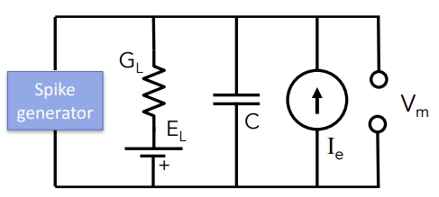
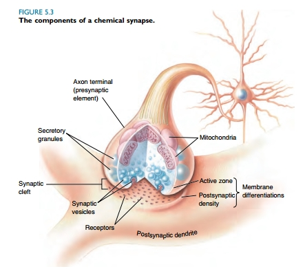

Mathematical modeling from sub-cell components of a neuron to simple neural network. As part of course Introduction to Neural Computation
Introduction
Researchers study our neural system in different levels: from components of a single cell, such as membrane, to the connection of two cells (synapsis), and further to the complex network of the whole brain. This summary trying to find a straight pathway of the modeling from sub-cellcular level to simple neural network. Please refer Introduction to Neural Computation for more detail.
Membrane
The membrane has roughly two parts that are vital in the neural activity: phospholipid bilayer and channels (FIG. 1). Phospholipid bilayer is permeable to water, oil etc., yet impereable for ions. This attribution is similar to semi-permeable membrane. Ions carry charges, if the charge densities of the two sides of phospholipid bilayer (intra cellular space and extra-cellular space) are different, there will be a voltage difference across cell membrane. In all, because of the existence of phospholipid bilayer, the cell has a function similar to capacitor
\begin{equation}
c V = Q
\label{ohm}
\end{equation} where $c$ is the capacity per unit area, $Q$ is the charge density differences and $V$ is the voltage accross the cell. The voltage of the extra-cellcular space is set to be zero, therefore $V$ here is also the voltage of intra-cellular space, which is roughly $-70 \text{mV}$ to $ -50 \text{mV}$ as measured by the experiment.
There are two types of channels: ion channels and metabolic channel. The effect of metabolic channels are more indirect and complex, which is not the central concern of this summary. Ion channel behaviors as the gate of the membrane. It allows only certain types of ions to pass through the membrane, thus produce inward or outward current flow. For example, Na-gated channel is only permeable to Na$^+$, when the channel is open . One good approximation of the channel is resistor, govern by the Ohm’s law
\begin{equation}
I = G_i (V - V_i)
\label{olm}
\end{equation} where $G_i$ is the conductance which can depend on the votlage and time, and $V_i$ is the equilibrium voltage (constant for a certain type of channel) results from the balance of electric force and diffusion (FIG. 2). Index $i$ here means $i$th type of ion channel. Positive $I$ means outward current.
![FIG. 2: An example of equilibrium voltage. (a) In the initial state, there are more Na and A ions in the right handside, yet the voltage is 0, since the effects of Na and A are cancelled out. (b) However, if there is an Na-gated channel in the membrane, the Na in the right handside will diffuse into the left handside. (c) Finally this system will go back to equilibrium state when the electric force is equal to the force for difussion. In this state, we have a equilibrium volatage (Ref: [2])](permea.jpg)
Single Cell
Differentiate on both side of equation (\ref{ohm}) and use equation (\ref{olm}), we have an equation for single cell
\begin{equation}
c \frac{dV}{dt} = - G_L (V - V_L) - I_e
\label{ifmodel}
\end{equation} where $I_e$ is the extra-induced current, such as the experimentist inject ions to the cell (negtive $I_e$). Index $L$ is leakage channel, which is a mathematically equivalent channel of a partial function of some types of channel (largely fall into K-selective channel). The rest of effects of channels can be simplified as the following statement:
- If $V > V_{th}$, $V = 50 \text{mV}$, then quickly fall to $V_{res}$.
This effect is often introduced by Na-selective channels. Typical value of $V_{res}$ is $-65 mV$. There are some choices for $V_{th}$, but values like $-30 mV$ is sufficient to fit a good result. When this statement is triggered, we say the neuron fired, or it made a spike. This single-cell model also be named Integrate and Firing Model. This model contains one resistor (leakage channel), one conductance (membrane), one external current source ($I_e$), and voltage source (FIG. 3). There are lots more sophisticated models, such as HH model, which replace the statement with more realistic channels as additional terms in equation (\ref{ifmodel}).
Equation (\ref{ifmodel}) can be collected with a more compact form
\begin{equation}
\tau \frac{dV}{dt} = -V + V_{\infty},
\label{ifmodelS}
\end{equation} where $\tau = c / G_L$ and $V_{\infty} = (V_L - I_e) / G_L$. If $G_L$ here is a constant, solution of equation [ifmodelS] is
\begin{equation}
V = (V_L - V_{\infty}) e^{-t/\tau} + V_{\infty}.
\end{equation} The firing pattern is shown in FIG. 4
Information is stored in the firing rate of neurons instead of the exact value of voltage. Firing rate is defined as the number of spikes in a unit time. The time spacing between two spikes can be calculated from equation (\ref{ifmodelS}) by calculate the time that $V$ grows from $V_{res}$ to $V_{th}$. The inverse of time spacing is firing rate, as shown in FIG. 5. In all, we could conclude the relation with
\begin{equation}
v = F[I_e]
\label{fireateeq}
\end{equation} where $v$ is the firing rate, and $F$ is some function has the shape in FIG. 5
Synapse
Before moving to neural network, we need to understand how two neurons connect each other by synapse. FIG. [syn] shows the biological structure of the synapse. When the pre-neuron is fired, the depolyzation will open the Ca-channel, induces an inward flow of Ca$^{2+}$. This Ca$^{2+}$ will release the transmitters in the presynapse. Transmitter in the synapse cleft then attach to particular receptors in the post-synapse, open ion-channel to allow Na$^+$ flow into the post-synapse. This final lead to the depolarization of the post-neuron.
The current flow into the post-neuron can be described by
\begin{equation}
I_{syn} = - G_{syn}(t) (V - V_{syn}),
\label{isyn}
\end{equation} where $V_{syn}$ is about $0$ mV, which is the reversal potential of the post-synapse. Conductance $G_{syn}(t)$ behaviors like a exponential decaying function. If there’s no transmitters in the synapse cleft, ion channels in the post-synapse are closed, $G_{syn}(t) = 0$ mV. A spike of the presynapse will suddenly release a large amount of transmitters, therefore largely increase $G_{syn}(t)$. Then the transmitters will graduatly either diffuse away or be decomposed by glials, which lead to the slow decay of the conductance. The conductance induced by single spike is often approximated by the exponential function
\begin{equation}
K(t) = G_{max} e^{-t / \tau}.
\end{equation} The whole conductance under a train of spikes is
\begin{equation}
G(t) = \sum_iK(t) \delta_{t,t_i}
\label{spikeraw}
\end{equation} where there is a spike at time $t_i$. Equation (\ref{spikeraw}) can be simplified with the spike train $S(t) = \sum_i\delta(t - t_i)$
\begin{equation}
G(t) = \int{d\tau}K(\tau)S(t - \tau)
\end{equation}
Simple Neural Network
Consider a network with only two neurons attached. The working status of each neuron is solely stated by its firing rate. So we need to findout the firing-rate relation between neurons. For the single neuron, the only source of external current is from its pre-neuron, i.e. $v = F[I_{syn}]$ from equation (\ref{fireateeq}). Yet $I_{syn}$ followed by equation (\ref{isyn}) is still too complex to be pratical. Hence we further throw away the voltage term, and treat $G_{syn}(t)$ as voltage-independent,
\begin{equation}
I_{syn} = \int{d\tau}K(\tau)S(t - \tau).
\end{equation} we could extract a factor $w$ so that the rest of $U(\tau) = K(\tau) / w$ can be normalized,
\begin{equation}
\int{d\tau}U(\tau) = 1
\end{equation} The convolution of a narrow (correnspond to short time of non-zero $K(\tau)$) window $U(\tau)$ with spike train $S(\tau)$ is exactly the firing rate of the presynapse $u$. Overall, we have
\begin{equation}
v = F[w u].
\end{equation}
This equation reveals the simple relation of the network. Larger $w$ means the two neurons are more strongly connect, only a slow firing rate of the pre-neuron is enough for triggering the post-neuron. This biologically could mean there are more channels in the post-synapse. Different presynapse will attarch to different sites of the postsynapse. Furthermore, the post-neual layer can also attarch to each other as shown in FIG. 7. The overall effect is the summation of all their current.
\begin{equation}
\boldsymbol{v} = F[W\boldsymbol{u} + M \boldsymbol{v}],
\end{equation} where $W, M$ are matrices, arrays are written as bold letters. This model is called rate model, which is the fundation of the lots of deep learning architechture.
Conclusion
The membrane of the neuron is a combination of resistor and capacity. Different conductance of different ion channels allow the neuron to fire, and soon go back to the resting potential. A spike from the pre-neuron will trigger a bit depolarization of the post-neuron. Once the potential is high enough, the post-neuron will also make spikes. Despite the complicated procedure for generating a spike, the exact voltage is unimportant. The real information is stored in the frequency of the spikes, which can be described using a single number – firing rate. By carefully simplifing the synapse, one could obtain the relation between the firing rates of different neurons, thus have an equation for the neuron network. This neuron network lies in the basis current deep network algorithms.
Ref
[1] Wiki: cellular membrane
[2] Chapter 3 of Neuroscience: Exploring the Brain
[3] Lecture 3 of MIT OpenCourseWare: Introduction to Neural Computation
[4] Chapter 5 of Neuroscience: Exploring the Brain
[5] Lecture 18 of MIT OpenCourseWare: Introduction to Neural Computation